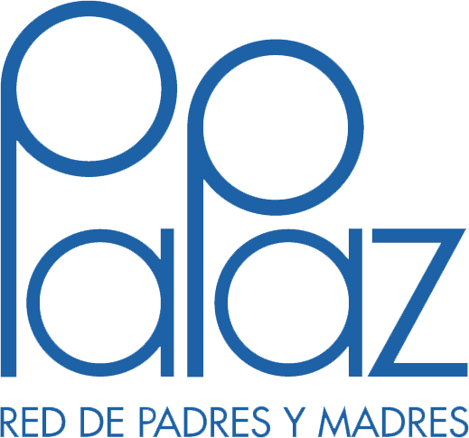

Asociación de padres
Al ser integrante de la Asosiación de Padres de Familia, se realiza una inmersion en el trabajo en equipo, toma de decisiones en conjunto con las directivas del colegio, las cuales quieren garantizar las diferentes propuestas educativas, que pretende como fin común generar un ambiente integral de educacion enfocado a los estudiantes, de tal forma que los mismos sientan armonía, felicidad y compromiso en su formación y crecimiento.
Esta asociacion se caracteriza por un trabajo constante, representado en el liderazgo de diferentes actividades beneficiosas a la comunidad educativa, regido por la ley, la cual nos dice que:
- Apoyar el Proyecto Educativo Institucional (PEI), al igual que los planes de mejoramiento continuo.
- Promover la confianza, tolerancia y respeto por los miembros de la comunidad educativa.
- promover la formacion y actualizacion de los padres de familia.
- Apoyar a familias y estudiantes en la mejora de resultados de aprendizaje.
- promover el dialogo y la solucion pasifica de conflictos.
- facilitar la solucion d eproblemas individuales y grupales, mejorando la formación integgral deacuerdo con la ley.
Participación
- Comités institucionales:
Con representacion en el consejo Directivo y Comité Escolar, de convivencia, Proyecto Ambiental, Plan Escolar de Emergencias, y escuela de padres. - Escuela de Padres:
Estrategia que busca formar padres, los primeros educadores de los estudiantes, con apoyo en capacitaciones, estrategias y fortalecimiento hasta el acompañamiento efectivo. - Red Papas:

Es una entidad sin animo de lucro, que vela por la proteccion de los derechos de los estudiantes y los padres de familia, al igual que velar por el cumplimiento de los dedeberes de los mismos.